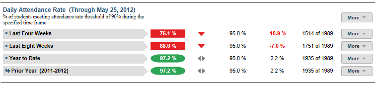

Dashboard Metrics


Daily Attendance Rate
Background
District Dashboard Metrics
Because of the value of attendance as a key leading indicator of student performance, virtually every performance management dashboard should include a measure of student attendance. This need was echoed in focus groups conducted with educators, in which student attendance was consistently named as one of three top data needs.
Primary Metric
- Daily Attendance Rate: percentage of students in attendance for a specified percentage of time (e.g., 90% of the time or greater) during the past four weeks and year to date, with comparison to the campus goal for each time frame.
Related Metric
- Average Daily Attendance: the average daily attendance for all students with membership on campus during the current grading period and year to date.
User Interface
Dashboard Example
Figure 1 shows the Daily Attendance Rate metric as seen on the district dashboard.

Figure 1 Ed-Fi Daily Attendance Rate Metric
Status Definition
The Status Indicator is determined by campus-specific thresholds (district goals) which are set at the district level. The default threshold for each time frame is 95%.
Table 2 lists the status indicators and trend comparisons for the Daily Attendance Rate as seen on the district dashboard.
Metric Indicator | Comparisons | |||
Metric Name | Sub-metric Name | Metric Status Indicator | Trend | Campus Attainment |
Daily Attendance Rate | Last Four Weeks | Red (Percentage) = if calculated Student Daily Attendance Rate is less than 90% Green (Percentage) = if calculated Student Daily Attendance Rate is greater than or equal to 90%. | Current and prior four weeks (20 instructional days) | The number of campuses meeting their campus goal |
Year to Date | Red (Percentage) = if calculated Student Daily Attendance Rate is less than 90% Green (Percentage) = if calculated Student Daily Attendance Rate is greater than or equal to 90%. | Trend is not shown for year to date | The number of campuses meeting their campus goal. | |
(a) The Value column displays the number of students in attendance out of the total number of students in the district.
Trend Definition
Table 3 lists the trend indicators for the Daily Attendance Rate metric.
Trend Indicators: Objective is to indicate Daily Attendance Rate | |||
| Up green | If the value for the current time frame is more than 5 percentage points higher than the prior time frame, then display a gray arrow trending upward. | |
| Unchanged | If the value for the current time frame is less than or equal to 5 percentage points higher or less than or equal to 5 percentage points lower, then display two gray arrows pointing outward indicating no direction. | |
| Down red | If the value for the current time frame is more than 5 percentage points lower than the prior time frame, then display a gray arrow trending downward. | |
The trend does not show for the first occurrence of a time frame since data is not available.
Delta Definition
The delta appears only in the campus list and displays the individual campus goals rather than the district goal.
Delta Indicators: Objective is to indicate Daily Attendance Rate | |||
Metric Name | Sub-Metric Name | Campus Goal | Delta |
Daily Attendance Rate | Last Four Weeks | Set Campus Goal | Red (Percentage) = if the calculated delta is less than the campus goal Black (Percentage) = if the calculated delta is equal to or greater than the campus goal |
Year to Date | Set Campus Goal | Red (Percentage) = if the calculated delta is less than the campus goal Black (Percentage) = if the calculated delta is equal to or greater than the campus goal | |
Periodicity
Best practice is to load the data for this metric daily.
Recommended Load Characteristics | |
Calendar | Throughout the school year |
Frequency of data load | Daily, Weekly, Monthly |
Latency | 4 weeks |
Interchange schema | Interchange-StudentAttendance.xsd |
Tooltips
The standard tool tips for the metric definition, column headers, and help functions display for this metric.
The following are tooltips specific to the Daily Attendance Rate metric:
- '+More' indicates drill down to view ‘Attendance Detail by time frame’
 is ‘No change from the prior period'
is ‘No change from the prior period' is ‘Getting worse from the prior period’
is ‘Getting worse from the prior period’ is 'Getting better from the prior period'
is 'Getting better from the prior period'
Business Rules
The Daily Attendance Rate metric displays the percentage of students in attendance for the following time frames:
- Last Four Weeks
- Year to Date
Middle and high schools typically designate a specific time frame or class period on which to base daily attendance. This daily attendance metric is computed based upon a district-specific business rule to interpret class (section) attendance data.
When calculating this metric, the following additional rules apply:
- Both excused and unexcused absences are counted as an absence.
- A tardy or early release (if captured) is not counted as an absence.
- Days a student is not enrolled must be adjusted in the computation.
- The length of the time frames is configurable and is defined by the district.
Data Assumptions
- Campus must record student absences at the classroom level for each time frame.
- The class or period when daily attendance is counted is specified.
- Student absences are categorized (e.g., excused, unexcused).
- District sets the value that drives the campus and student status thresholds.
Computed Values
Table 6 defines how values are calculated for each time frame. The result of the calculation displays in the Status column on the campus dashboard.
Table 6 Calculated Values for District
Daily Attendance Rate Metric
Metric Values | ||
Daily Attendance | Last Four Weeks | Days in Attendance = (Number of instructional days in last four weeks) – (Student excused absences + student unexcused absences) |
Percentage = (Days in Attendance / Number of instructional days in last four weeks) * 100 | ||
Year to Date | Days in Attendance = (Total number of instructional days in year to date) – (student excused absences + student unexcused absences) | |
Percentage = (Days in Attendance / Total number of instructional days in year to date) * 100 | ||
Calculation Notes
- If a student is not enrolled for some number of days, subtract those days from the “Total Number of Instructional Days” in both the numerator and the denominator.
- A day of attendance is computed from attendance in a specified class (section), homeroom, or period.
- If current period is the 1st grading period of school year, the previous grading period is grayed-out.
- Both excused and unexcused absences are subtracted from total instructional days.
- A tardy or early release (if captured) is not counted as an absence.
- Days the student is not enrolled is subtracted from total instructional days.
- Length of the time frames may differ between elementary, middle, and high school since it is configurable and defined by district.
- The campus must define the campus goal each year. The default for all three time frames is 90%.
Data Anomalies
Data Anomalies
- Metrics are sensitive to when and how often the data is loaded.
- Late enrollees are likely to be missing attendance and discipline data. If data exists, adjust the denominator in the calculation to reflect eligible days.
- If the school calendar changes, adjust the denominator to reflect eligible days.
Footnotes
Footnotes are used to provide addition data information concerning the metric.
The following footnotes display below the metric:
- Best practice is to footnote students transferring in that have not been present for the first 4 weeks.
- Metric has been adjusted to account for student's late enrollment.
Date of Refresh
Best practice is for the date of last data refresh to appear next the metric in the following format:
- (Through April 2010)
Implementation Considerations
Student Identity
Maintaining a correct and consistent student identity is at the center of any education data system. Most systems use some sort of unique identifier. However, sometimes this identifier is entered incorrectly or sometimes different systems use different identifiers.
The UDM XML supports the interchange of multiple types of identifiers. The StudentReference is a complex type within the UDM to maintain the referential integrity of the student (that is, ensuring that the data associated with each student is accurately associated with the right student). The complex type of the student reference assists with implementing the accurate matching algorithm to identify a student by utilizing any of the individual attributes (e.g., Student Unique State ID, Student ID, Campus Local ID (with Campus ID), Name and Birth Date). For example, if the Student Unique State ID is unknown, you can find the student’s identity by their Student ID, First Name, Last Name and Birth Date.
Designation of Campus Rule for Daily Attendance
Middle and high schools typically designate a specific class (e.g., homeroom), or a time or class period on which to base daily attendance. Capture this campus-specific business rule in order to properly interpret daily attendance from section attendance data.
Late enrollments
For late enrollment students, adjust the number of instructional days in a specified time frame. Specifically, subtract the days the student was not enrolled from the number of instructional days in a specified time frame (i.e., last four weeks, last eight weeks, or year-to-date).
Classification of Days as Non-Instructional Days
For the computation of the number of instructional days, use either the total count of instructional days in a "specified timeframe" or the school calendar to identify specific instructional days for the "specified timeframe" as the denominator for the percentage. The latter is a more accurate approach to calculating the metric with the caveat that this requires frequent uploading of data throughout the school year.
Students with No Absences
When taking roll at the classroom level, campuses typically record student absences, but do not record if a student is present in a class. The query to compute student absences needs to account for students with perfect attendance, which is the result of in null absences.
Frequency of Uploading Data
The metric computation implementation may vary depending on the periodicity of loading the data. For example, a daily load requires that you load data for only a single day (i.e., the last instructional day). Less frequent uploads require that you load data for each day since the date of the last load.
Length of Time Frames
The choice of four and eight weeks and year to date in the Ed-Fi dashboards is based on educator input, but the length of each time frame is configurable at the district level.
Campus Goals
Best practice is to set the campus goals for each campus at the district level. A secure mechanism is required to allow the district to set and maintain those thresholds.
Metric Status Indicator and Delta
For the Ed-Fi dashboards implementation, the campus metric status threshold has been set at 90%. While the District Goal default threshold is 95%. Therefore, this 5% difference allows for Districts to have a green metric status indicator and a red calculated Delta percentage. Both of these default thresholds may be changed by the district.
Database Table Scalability
Daily attendance is one of the largest student datasets to maintain. To limit the size of daily attendance, developers may include only the current year’s data.
To aid in planning for dataset management, one benchmark from the Ed-Fi dashboards load testing is that the daily attendance data for half of the school year required 8.3 million rows, for roughly 48,500 students or approximately 171 rows per student.
Aggregate Metric Inclusions and Exclusions of Special Education Students
Each campus's aggregate metrics may include or exclude the special education population, depending on the intended purpose for a specific metric and campus goal.
Drill Downs
Drill Down Views
The dashboards include the option to drill down and see more detail that is associated with a metric. Table 7 lists the drill down views that are recommended for this metric.
| Historical | Graph of metric values across multiple time periods (current and prior years). | |
| Campus List | List of campuses who do not meet their campus threshold for this metric for the "specified timeframe" |
User Interface
Dashboard Example
Figure 2 shows the Daily Attendance Rate drill down metric as seen on the district dashboard.